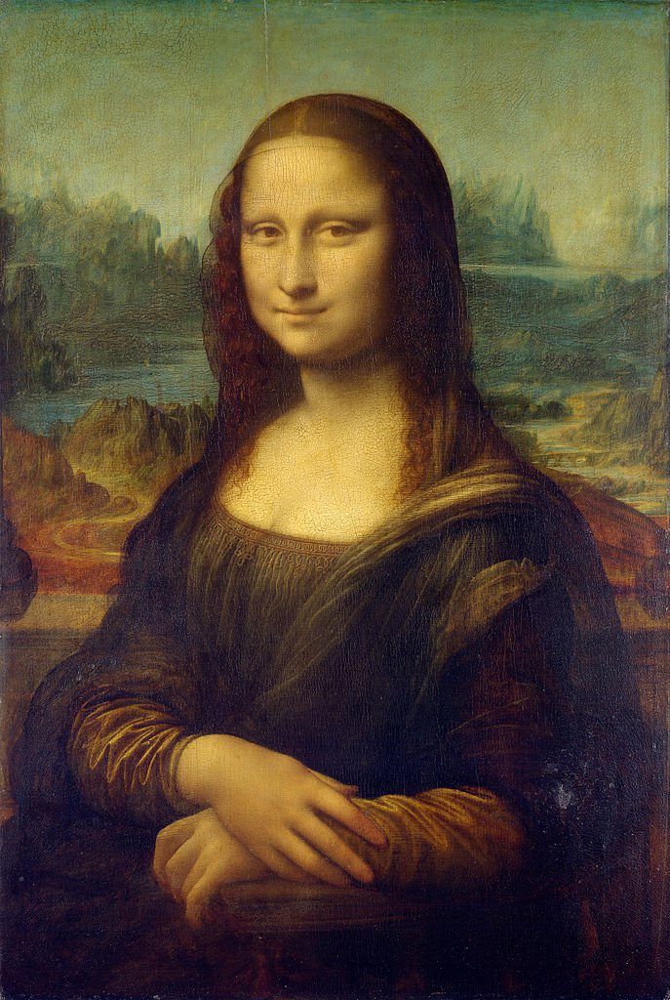
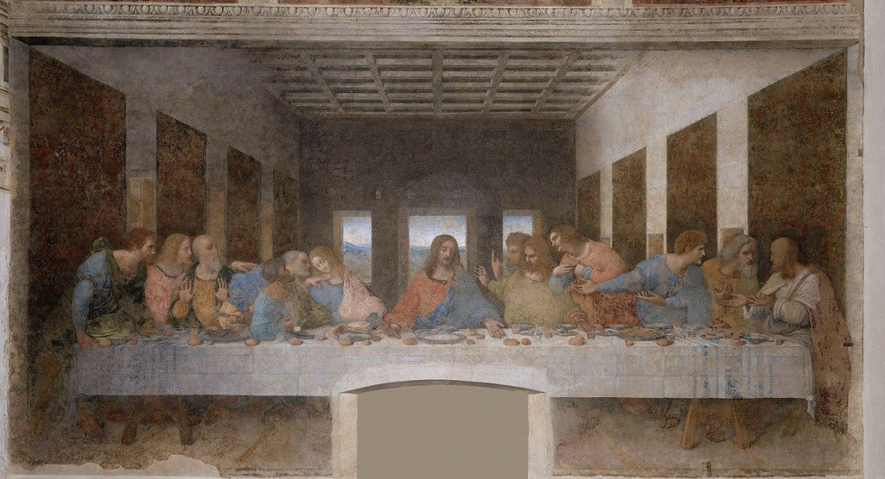
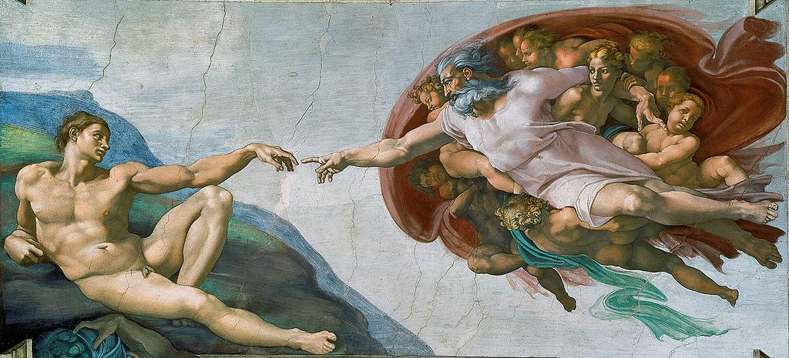
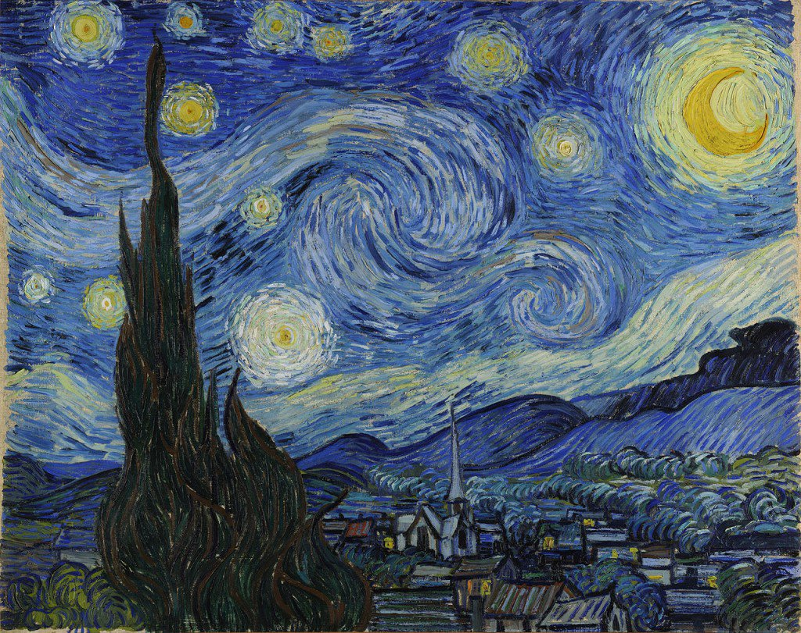
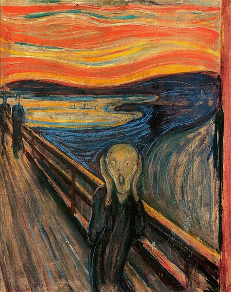
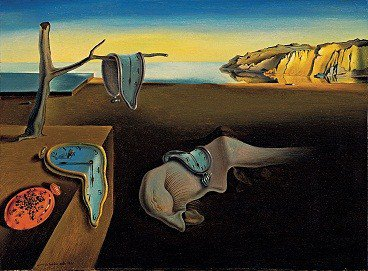
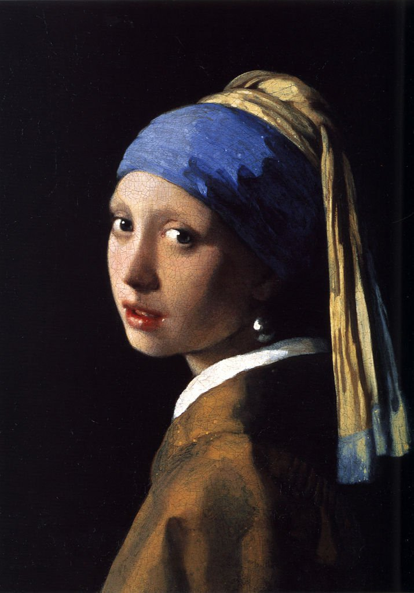
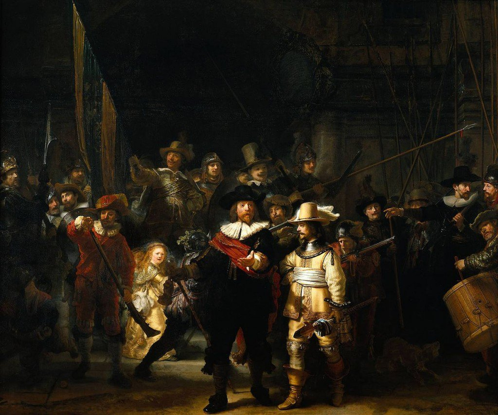
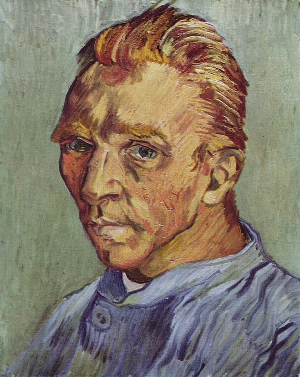
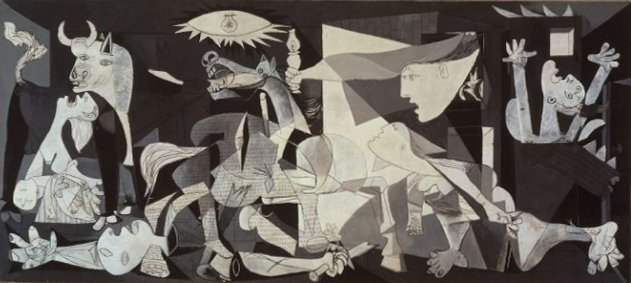

Top 10 Most Famous Artistic Works
Between the millions of paintings that are created and shown in galleries and museums all around the world, a very small number transcend time and make history. This select group of most famous paintings is recognizable by people from all over the world and of all ages and will probably continue to echo and leave impressions in the minds of people in the centuries to come. Below is a list of some of the most famous paintings in the world.1. Mona Lisa – Leonardo da Vinci.

The most famous painting in the world is the main attraction of the Louvre museum in Paris, where it is seen by six million people every year! Leonardo da Vinci painted it from the year 1503 or 1504 till shortly before he died in 1519.
2. The Last Supper – Leonardo da Vinci.

This world's famous painting is not shown in a museum, but rather covers the back wall of the dining hall at Santa Maria delle Grazie monastery in Milan, Italy. It was painted by the most famous artist of all time, Leonardo da Vinci in the late 15th-century. The painting depicts the scene of The Last Supper of Jesus with his disciples. Seeing this masterpiece in the small monastery is truly one of the best attractions Milan has to offer.
3. The Creation Of Adam – Michelangelo.

Located on the ceiling of The Sistine Chapel in Vatican City, Rome. The Creation Of Adam was painted by Michelangelo between 1508 and 1512 and it is just one of nine scenes from the book of Genesis that are painted on the center of the ceiling of the chapel.
4. Starry Night – Vincent van Gogh

Painted by Dutch artist Vincent van Gogh in 1889, Starry Night is one of the most well known paintings in modern culture. The painting is part of the permanent collection of the Museum of Modern Art in New York. The painting was the inspiration for the song “Vincent” (also known as “starry starry night”) by Don McLean. McLean’s song reference the painting as well as other paintings by the famous artist.
5. The Scream – Edvard Munch.

The most famous piece by Edvard Munch, painted around 1893. It was painted using oil and pastel on cardboard. This frightening painting is on display at The National Gallery, Oslo, Norway.
6. The Persistence Of Memory – Salvador Dali.

Painted in 1931 by the Spanish artist Salvador Dali, The Persistence of Memory is one of the most recognizable pieces in art history. This work of art is known to make people ponder on their way of life and the way they spend their time, and it is also thought that this wonderful painting was inspired by Albert Einstein’s Theory of Relativity.
7. Girl With A Pearl Earring – Johannes Vermeer.

Considered by many to be “the Dutch Mona Lisa” or the “Mona Lisa of the North”, this beautiful painting by the Dutch artist Johannes Vermeer features, well… a girl with a pearl earring. The painting was completed around 1665 and is on display in the Mauritshuis Gallery in the Hague, the Netherlands.
8. The Night Watch – Rembrandt van Rijn.

Completed in 1642, this famous artwork is on display at the Rijksmuseum in Amsterdam. The painting depicts a city guard moving out, led by Captain Frans Banning Cocq, his lieutenant and the rest of the guard’s armed men.
9. Self-Portrait Without Beard – Vincent van Gogh.

Even though Van Gogh painted many portraits of himself, this one is by far the most famous as it is his last self-portrait and one of the few that depicts him without a beard. It was given by him to his mother as a birthday gift. It is also one of the most expensive paintings of all times, as it was sold for $71.5 million in 1998, and is now part of a private collection.
10. Guernica – Pablo Picasso.

The most famous painting by Picasso, completed in 1937. The painting was painted in Paris and is Inspired by the bombing of Guernica in Spain during the Spanish Civil War. The painting is on permanent display in Museo Reina Sofía, Madrid, Spain.